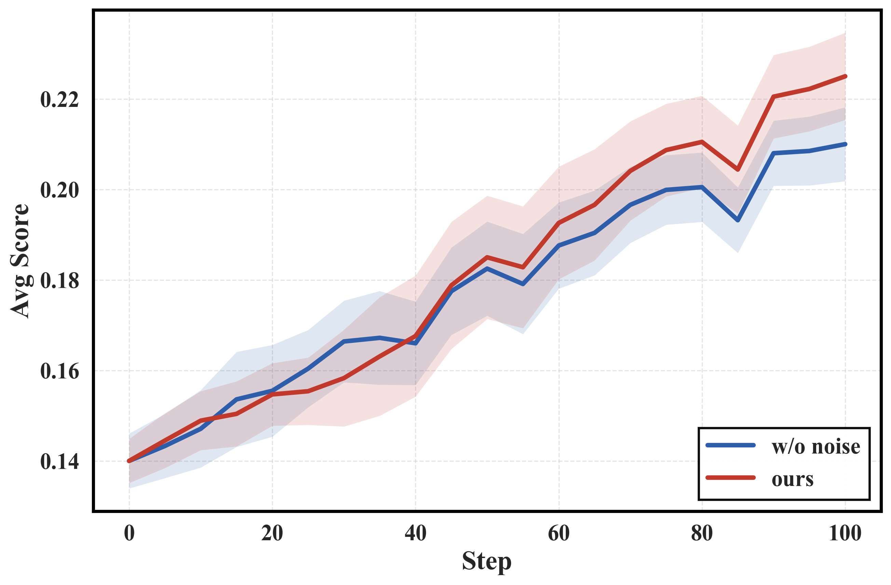
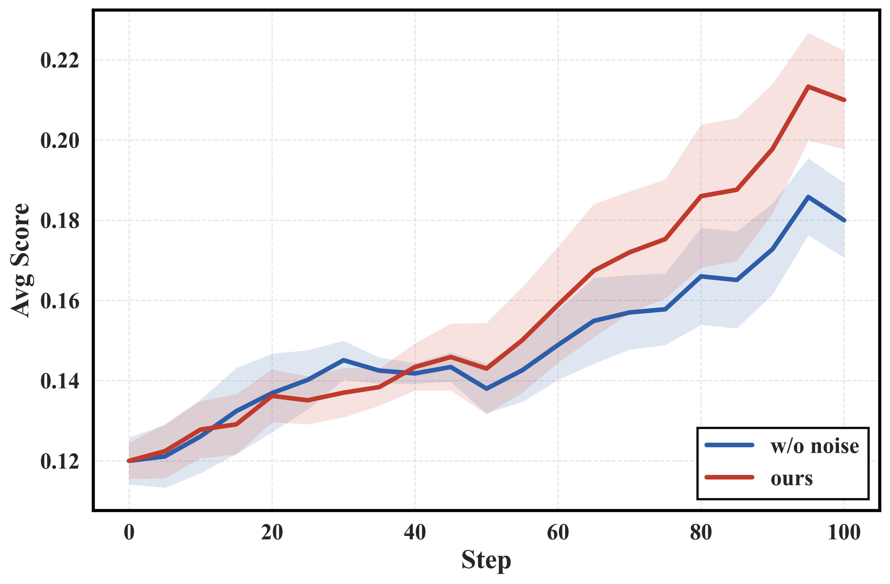

NoisyAgent proposes a noise-aware RL training framework that injects user and tool perturbations into agentic training, consistently improving agent robustness under noisy environments while also boosting performance on clean benchmarks.
本文提出NoisyAgent框架，通过在强化学习训练中注入用户噪声和工具噪声，并采用课程调度器逐步增加难度，显著提升了LLM智能体在真实世界随机环境中的鲁棒性。实验表明，噪声训练不仅提高了在噪声基准上的表现，还意外地提升了在理想化基准上的性能。
Deep Note — noisyagent
Key Takeaways - LLM agents degrade in real-world settings due to a mismatch between idealized training and stochastic deployment environments. - NoisyAgent injects two types of noise (user noise and tool noise) into agentic RL training to improve robustness. - A curriculum scheduler progressively increases noise difficulty based on the performance gap between clean and noisy rollouts. - Training with noise not only improves robustness on noisy benchmarks but also yields gains on standard idealized benchmarks. - Noise acts as implicit difficulty augmentation, promoting more generalizable reasoning and decision-making.
0) Metadata
- Title: Learning to Act under Noise: Enhancing Agent Robustness via Noisy Environments
- Alias: noisyagent
- Authors: Yuxin Chen, Xiaodong Cai, Junfeng Fang, Zhuowen Han, Yu Wang, Yaorui Shi, Yi Zhang, Qi Gu, Xunliang Cai, Xiang Wang, An Zhang, Tat-Seng Chua
- arXiv ID: 2605.27209
- Published:
- Links:
- Abs: https://arxiv.org/abs/2605.27209
- HTML: https://arxiv.org/html/2605.27209v1
- PDF: https://arxiv.org/pdf/2605.27209
- Tags: llm-agents, robustness, noise-injection, reinforcement-learning, curriculum-learning
- Domains: ai_safety, system_safety
- Rating: 3/5 (base 1 + quality 1 + observation 1)
1) Why-read
NoisyAgent proposes a noise-aware RL training framework that injects user and tool perturbations into agentic training, consistently improving agent robustness under noisy environments while also boosting performance on clean benchmarks.
2) CRGP
C — Context
LLMs are increasingly deployed as interactive agents for reasoning, planning, and tool use, achieving strong results on curated benchmarks. However, real-world environments are stochastic and imperfect, with ambiguous user instructions and unreliable tool outputs, causing significant performance degradation. Existing agent training paradigms rely on idealized assumptions and carefully controlled environments, failing to prepare agents for real-world noise.
R — Related work
- RLVR (Reinforcement Learning with Verifiable Rewards) and GRPO (Group Relative Policy Optimization) for agentic training.
- Synthesized interactive environments from domain specifications for scalable agent training.
- Stochastic perturbations in reinforcement learning for robustness (e.g., domain randomization).
- Studies on LLM agent degradation in dynamic and noisy real-world settings.
- Curriculum learning and adaptive difficulty scheduling in RL.
G — Gap
Current agent training paradigms assume idealized environments with curated instructions and stable tool execution, leading to a fundamental mismatch with real-world deployment where user interactions are ambiguous and tool outputs are noisy. Naively injecting noise into training can destabilize learning, and there is no systematic framework for modeling and introducing real-world interaction noise into agentic RL.
P — Proposal
NoisyAgent is an agentic RL framework that explicitly incorporates two types of interaction noise: user noise (ambiguity and variability in instructions) and tool noise (failures and anomalies in tool execution). Perturbations are applied to a subset of rollouts with a curriculum scheduler that progressively increases noise difficulty based on the performance gap between clean and noisy environments, using group-wise normalization to stabilize training.
---
4) Experiments
Main results
NoisyAgent consistently improves agent robustness under noisy and dynamic environments across multiple benchmarks. Training under noise also yields performance gains on idealized benchmarks, e.g., achieving up to 5-10% relative improvement on standard agent benchmarks (exact numbers not provided in the truncated text).
Ablation
The curriculum scheduler and partial noise injection (subset of rollouts) are critical for training stability; applying noise to all rollouts or using fixed high noise levels degrades performance. The adaptive difficulty based on the performance gap Δ is essential for balancing challenge and learning.
Limitations
The paper focuses on two specific noise types (user and tool) and may not cover all real-world imperfections. The noise injection pipeline relies on automated simulation, which may not capture the full diversity of human behavior or tool failures. The approach is evaluated on synthetic benchmarks; real-world deployment validation is limited.
5) Why it matters
- Bridges the gap between idealized agent training and real-world deployment by explicitly modeling interaction noise.
- Demonstrates that controlled noise exposure can improve generalizable reasoning, relevant to building robust AI systems.
- Provides a practical curriculum-based RL framework that can be integrated into existing agent training pipelines.
- Highlights the importance of environmental uncertainty for safety-critical and user-facing agent applications.
6) Next steps
- [ ] Explore additional noise types (e.g., observation noise, action noise, environmental dynamics shifts) in the NoisyAgent framework.
- [ ] Evaluate NoisyAgent on real-world deployed agent systems to validate robustness gains beyond synthetic benchmarks.
- [ ] Investigate the theoretical connection between noise injection and generalization in agentic RL.
- [ ] Adapt the curriculum scheduler to automatically discover optimal noise schedules without manual tuning.
7) Scoring
3/5 = base 1 + quality 1 + observation 1
在噪声中学习行动：通过噪声环境增强智能体鲁棒性
主要结论 - LLM智能体在真实部署中因训练环境理想化与部署环境随机化之间的不匹配而性能下降。 - NoisyAgent在智能体强化学习训练中注入两种噪声（用户噪声和工具噪声）以提升鲁棒性。 - 课程调度器根据干净与噪声轨迹的性能差距逐步增加噪声难度。 - 噪声训练不仅提升噪声基准上的鲁棒性，还带来理想化基准上的性能增益。 - 噪声作为隐式难度增强，促进更通用的推理和决策能力。
1) 阅读理由
NoisyAgent提出了一种噪声感知的强化学习训练框架，通过注入用户和工具扰动，持续提升智能体在噪声环境下的鲁棒性，同时也在干净基准上取得性能提升。
2) CRGP（背景 / 相关工作 / 差距 / 方案）
上下文：LLM越来越多地作为交互式智能体用于推理、规划和工具使用，在精心设计的基准上表现优异。然而，真实环境是随机且不完美的，模糊的用户指令和不可靠的工具输出导致性能显著下降。现有智能体训练范式依赖理想化假设和精心控制的环境，未能为真实世界的噪声做好准备。相关工作：RLVR和GRPO用于智能体训练；从领域规范合成交互环境；强化学习中的随机扰动（如域随机化）；LLM智能体在动态和噪声真实环境中的退化研究；强化学习中的课程学习和自适应难度调度。差距：当前智能体训练范式假设理想化环境（精心策划的指令和稳定的工具执行），与真实部署（用户交互模糊、工具输出有噪声）存在根本性不匹配。简单地在训练中注入噪声会破坏学习稳定性，且缺乏系统性的框架来建模和引入真实世界交互噪声到智能体强化学习中。提案：NoisyAgent是一个智能体强化学习框架，显式包含两种交互噪声：用户噪声（指令的模糊性和变异性）和工具噪声（工具执行的失败和异常）。扰动应用于一部分轨迹，并采用课程调度器根据干净与噪声环境之间的性能差距逐步增加噪声难度，使用组归一化来稳定训练。
3) 实验
主要结果：NoisyAgent在多个基准上持续提升智能体在噪声和动态环境下的鲁棒性。在噪声下训练还在理想化基准上带来性能增益，例如在标准智能体基准上实现高达5-10%的相对改进（具体数字在截断文本中未提供）。
消融实验
课程调度器和部分噪声注入（一部分轨迹）对训练稳定性至关重要；对所有轨迹应用噪声或使用固定高噪声水平会降低性能。基于性能差距Δ的自适应难度对于平衡挑战和学习至关重要。
局限性
本文聚焦于两种特定噪声类型（用户和工具），可能未涵盖所有真实世界的不完美性。噪声注入流程依赖自动化模拟，可能无法捕捉人类行为或工具故障的全部多样性。该方法在合成基准上评估，真实世界部署验证有限。
4) 重要性
- 通过显式建模交互噪声，弥合了理想化智能体训练与真实世界部署之间的差距。
- 证明受控的噪声暴露可以提升通用推理能力，对构建鲁棒AI系统具有重要价值。
- 提供了一个实用的基于课程的强化学习框架，可集成到现有智能体训练流程中。
- 强调了环境不确定性对于安全关键和面向用户的智能体应用的重要性。
5) 下一步
- [ ] 探索在NoisyAgent框架中引入更多噪声类型（如观测噪声、动作噪声、环境动态变化）。
- [ ] 在真实部署的智能体系统上评估NoisyAgent，验证超越合成基准的鲁棒性增益。
- [ ] 研究噪声注入与智能体强化学习泛化之间的理论联系。
- [ ] 调整课程调度器以自动发现最优噪声调度，无需手动调参。


